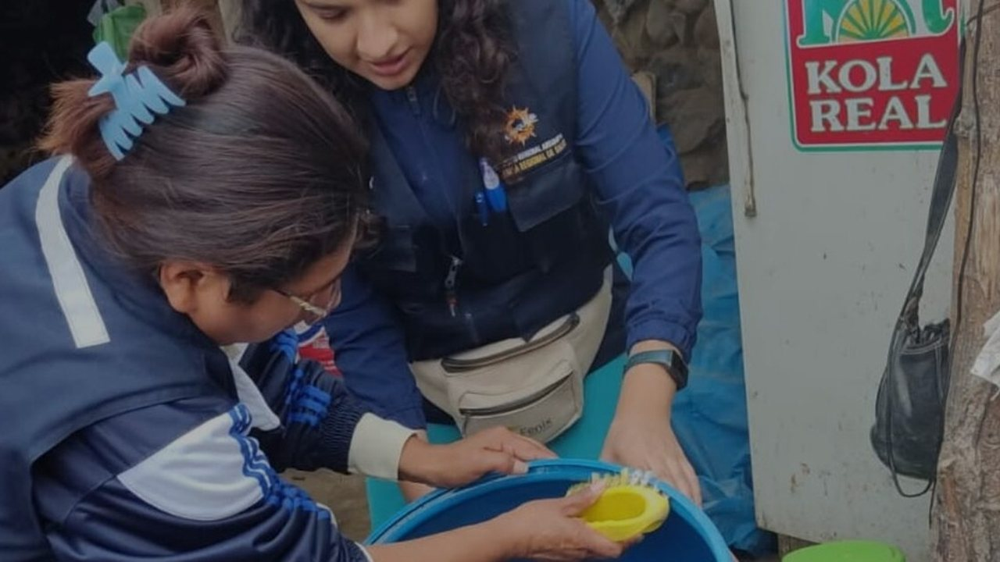
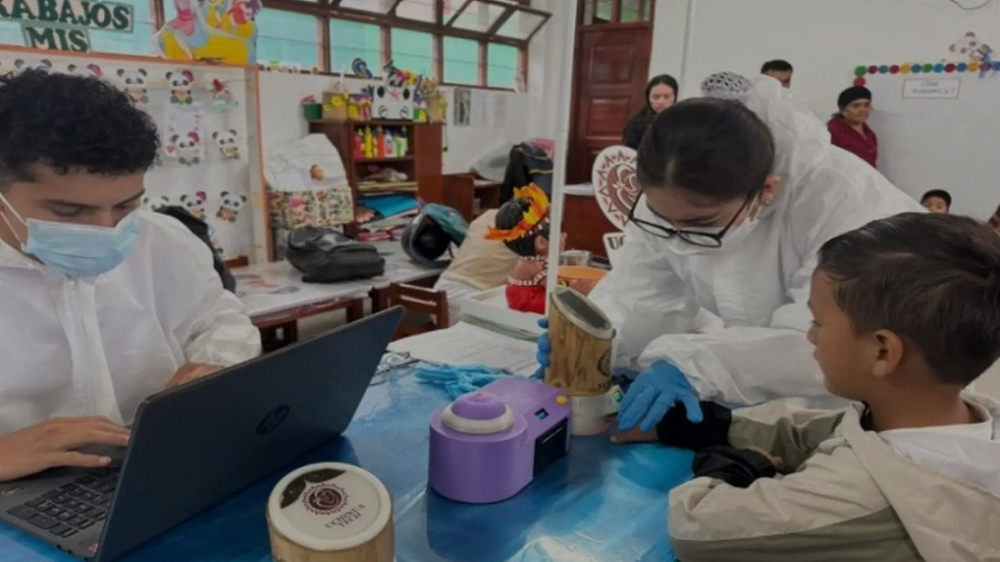
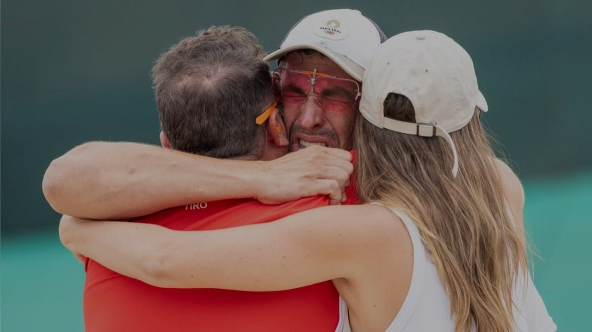

Primero, Sporting Cristal renueva a 7 jugadores hasta 2027. En contexto, sporting Cristal ha extendido los contratos de siete futbolistas hasta el 2027, reforzando su plantilla para la próxima temporada.







Primero, Sporting Cristal renueva a 7 jugadores hasta 2027. En contexto, sporting Cristal ha extendido los contratos de siete futbolistas hasta el 2027, reforzando su plantilla para la próxima temporada.
También, IA aporta pistas al problema P=NP. En contexto, una inteligencia artificial ha descubierto nuevas pistas sobre el enigma matemático del milenio P=NP, según Xataka.
También, Artistas abandonan redes por IA. En contexto, artistas están dejando Facebook e Instagram porque temen que la inteligencia artificial les quite su trabajo, informa CNN en Español.
Primero, Brigadas de salud refuerzan visitas domiciliarias para prevenir el dengue en Ilo. En contexto, en Ilo, las brigadas de salud están intensificando las visitas a domicilio para controlar la expansión del dengue.
También, Tres de cada diez pacientes de cáncer de pulmón son mujeres. En contexto, un estudio muestra que la mujer representa el 30% de los inscritos en el registro de cáncer de pulmón.
También, El dengue se expande a velocidad alarmante a nivel mundial. En contexto, expertos alertan que el dengue está creciendo a una "velocidad alarmante" en todo el mundo.
Primero, Dengue aumenta por El Niño. En contexto, el Ministerio de Salud prevé un incremento de casos de dengue en las próximas semanas por el fenómeno El Niño.
También, Fans escuelan 600 km en bici a la final. En contexto, dos hinchas de Estudiantes de La Plata recorrieron 600 kilómetros en bicicleta para ver la final de la Copa Libertadores.
También, Vacunación en colegios de Ate. En contexto, minsa refuerza la lucha contra el dengue vacunando a escolares en colegios de Ate.
Cada edición dura menos de dos minutos. En la web tienes el resumen de cada historia y el enlace directo al medio original para leerla completa.
Conoce Olfatecho →